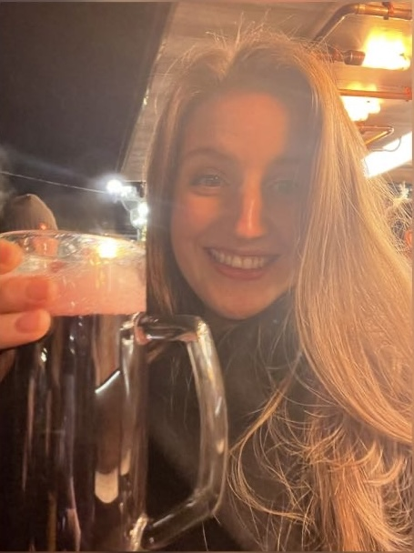

Private Informationen
- Alter: 28 Jahre
- Beruf: Trainee, AOK Bayern
- Hobbys: Lesen, Laufen, Freunde treffen
- Wohnort: München, Deutschland
Reisepläne
- USA: Boston, New York, Washington DC, Philadelphia
- Griechenland
- Thailand
- Alpenüberquerung
- Neuseeland
Bildergalerie



Zurück zur Kontaktseite
Zur Leseliste